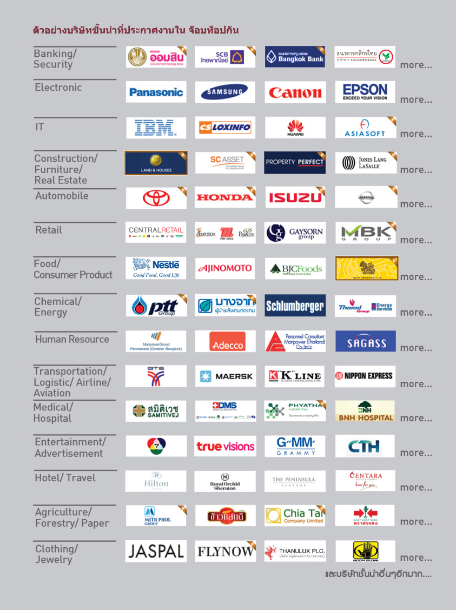

หางานบริษัทชั้นนำ
ต้องทำ ซูเปอร์ เรซูเม่
เพราะทุกบริษัทชั้นนำ ต้องการใบสมัครงานที่เป็น ซูเปอร์ เรซูเม่ เท่านั้น
ต้องการหางานก่อน

ทำไมต้องใช้ Super Resume ?
Resume รูปแบบอื่นสร้างปัญหาให้ HR
Super Resume เป็นรูปแบบเรซูเม่ที่บริษัทชั้นนำเจาะจงเลือกใช้ในการรับสมัครงาน เพราะให้ข้อมูลผู้สมัครได้ดีกว่าเรซูเม่ที่ทั่วไปที่ทำกันเอง ซึ่งมีหลายร้อยรูปแบบ ทำให้ HR ปวดหัวมากในการรับคนเพราะข้อมูลที่อยู่ในแต่ละแบบของเรซูเม่จะไม่เหมือนกัน ทำให้เวลา HR ทำงานเลือกอ่านได้ลำบาก บางแบบข้อมูลการศึกษาก็อยู่หน้าแรก บางทีก็หน้า 2 บางทีก็หน้า 3 เพราะฉะนั้น เจาะจงเลือก SR ในการสมัครงานก็จะมีโอกาสในการได้รับการพิจารณามากกว่า
นำเสนอตัวตนได้ดีกว่า
สมัยนี้รับคนที่ Competency เรียกว่า เป็น Super Resume เดียวที่มีตัวช่วยให้นำเสนอจุดเด่นของผู้สมัครและ Lifestyle เรื่องงานอดิเรก
Resume นี้ใช้มาแล้ว 16 ปี มีคนกว่า 2 ล้านที่เป็นสมาชิก และเป็นเรซูเม่เดียว ที่มีลิขสิทธิ์ แต่เราให้ผู้สมัครใช้ฟรี
ทำไมต้องใช้ JOBTOPGUN หางาน ?
ทุกตำแหน่งเปิดรับจริง ซึ่งต่างจากหลายเว็บไซต์ที่อาจเอาตำแหน่งงานมาลงเองโดยไม่ได้รับอนุญาต
HR บางท่านเช็คใบสมัครจากระบบ Apply Online ไม่ได้เช็คจากอีเมล
มีตัวช่วยคือ Super Resume ที่แสดงตัวตนได้ดีกว่าเรซูเม่แบบอื่นๆ
ขั้นตอนการหาและสมัครงาน
สร้าง Super Resume ให้เสร็จพร้อมใช้ในการสมัครงาน
หางานที่ต้องการด้วย Search Engine ตามนี้
ค้นหาจากชื่อบริษัทดัง
งานตามรายชื่อบริษัท
งานตามสายอาชีพ
งานตามวันที่
งานตามประเภทธุรกิจ
งานตามประสบการณ์
งานตามจังหวัด
งานตามเงื่อนไข
งานนิคมอุตสาหกรรม
เมื่อเจอตำแหน่งงานที่คุณสนใจ คุณสามารถสมัครงานได้โดยกด “สมัครทันที”
ระบบจะนำคุณเข้าสู่หน้าล็อกอินเพื่อส่ง Super Resume ไปยัง HR บริษัทที่คุณสนใจ
หลังจาก Log in ระบบจะนำคุณไปที่หน้าส่ง Resume ให้คุณเลือกเรซูเม่และเอกสารที่คุณต้องการส่งและ ตรวจสอบความเรียบร้อย
กด “ส่งเรซูเม่” การสมัครงานของคุณก็เสร็จสมบูรณ์ มั่นใจว่าเรซูเม่ส่งถึง HR แน่นอน